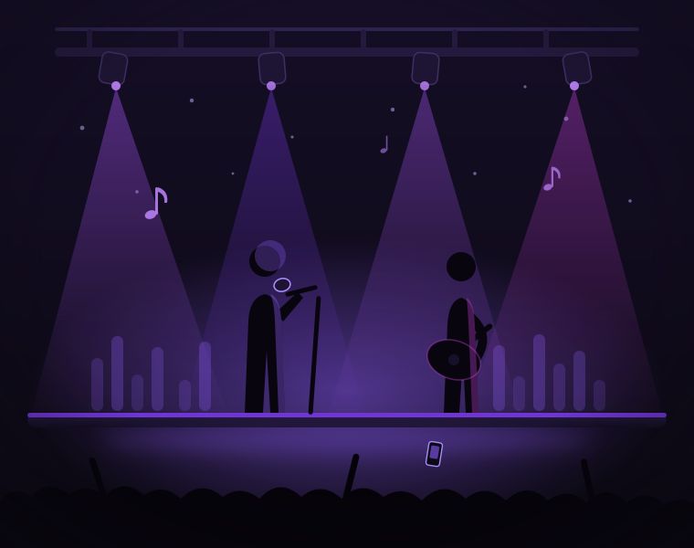

Marketplace musical · Vale do Paraíba
O próximo show começa com a escolha certa.
Encontre músicos, bandas e cantores para o seu evento. Descubra talentos, conheça o trabalho de cada artista e negocie diretamente com quem vai fazer seu evento acontecer.
Explore todos os perfis gratuitamente, sem criar conta.

Cantores e bandas Lorena · GuaratinguetáEstilos
Categorias musicais
Do sertanejo ao jazz: encontre o estilo certo para o seu evento. Toque em uma categoria para filtrar os artistas.
Talentos da região
Artistas em destaque
Conheça os perfis públicos disponíveis na plataforma.
Conteúdo demonstrativo. Os perfis abaixo são ilustrativos e não representam usuários reais — servem para demonstrar a experiência da plataforma nesta etapa do projeto.
Simples assim
Como a plataforma funciona
Três passos entre a busca e o palco montado.
É músico? Coloque seu talento no PalcoLivre.
Crie seu perfil gratuito, monte seu portfólio e seja encontrado por contratantes de Lorena, Guaratinguetá e toda a região.